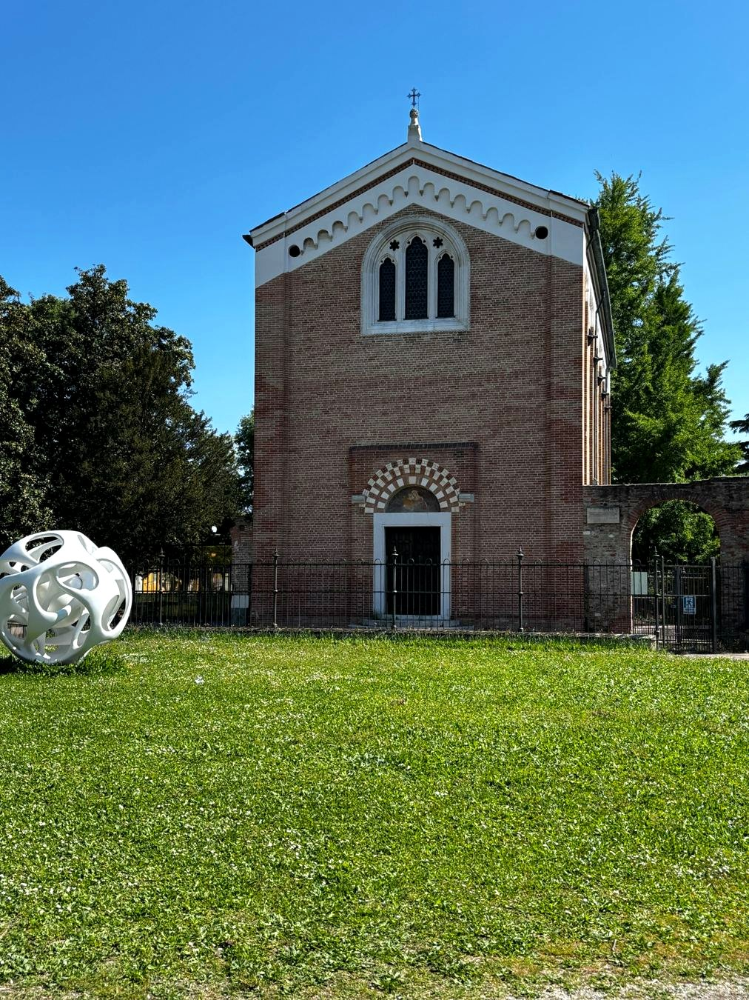
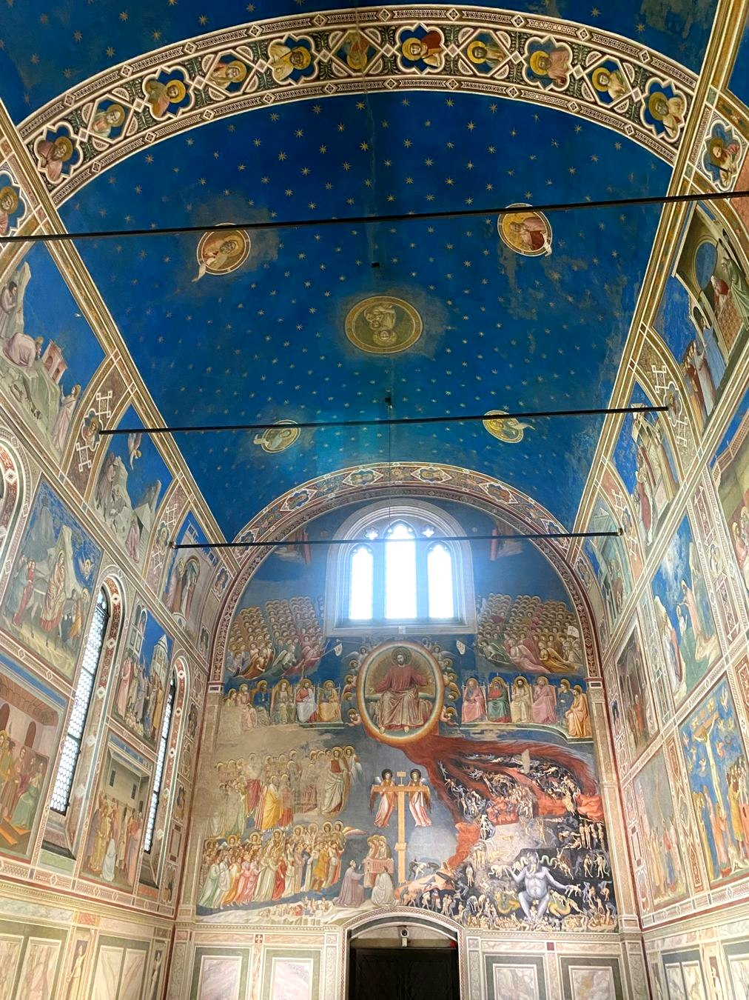
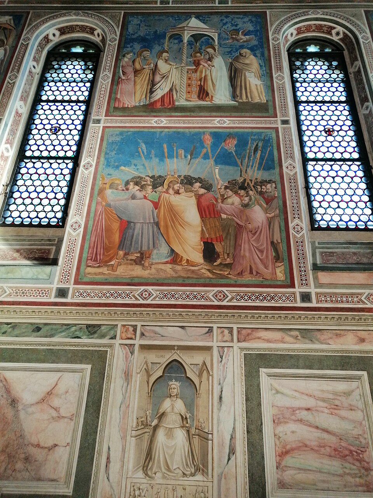
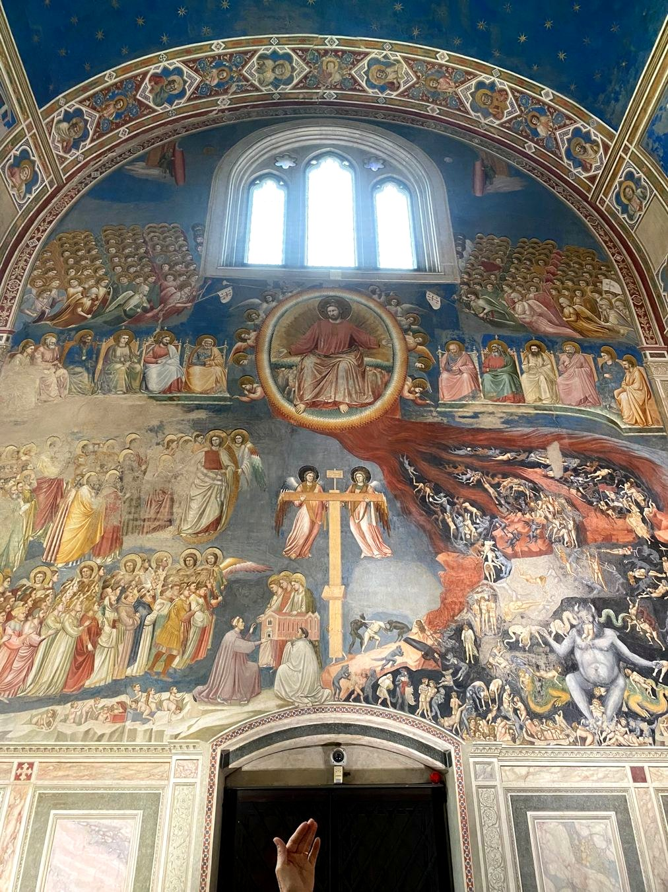
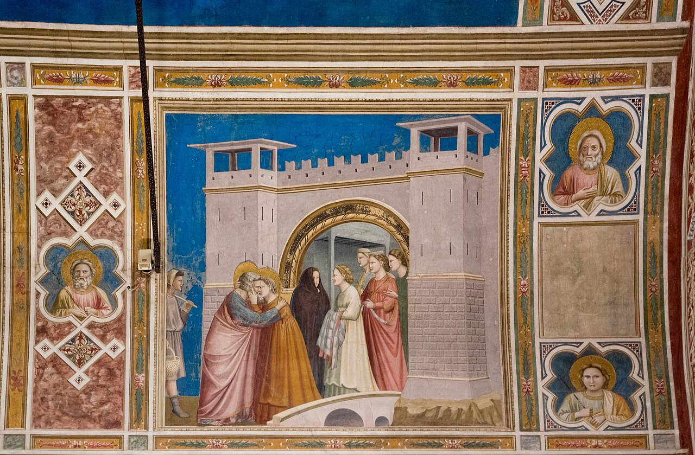
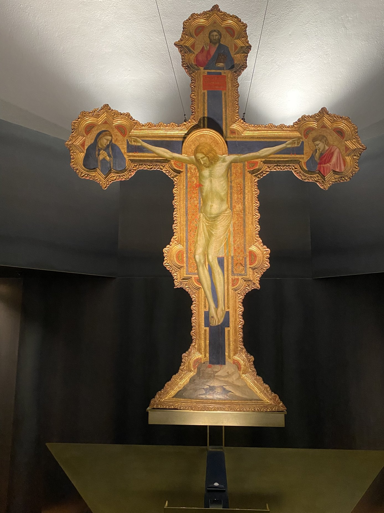
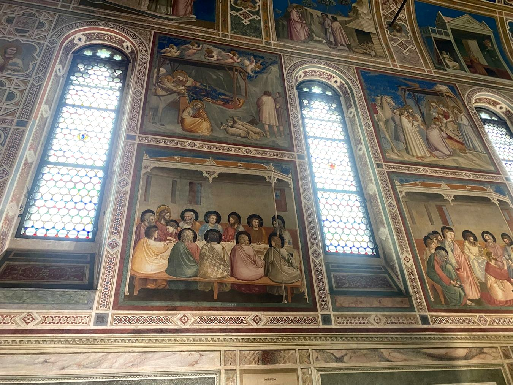

Des textes anciens associent les débuts de Giotto à Cimabue. Vasari a popularisé le récit de leur rencontre, dont les circonstances restent incertaines. Giotto travaille notamment à Florence, à Padoue et à Naples.
REGARDER L’ART · LES ARTISTES
Giotto
Vers 1267–1337
Raconter par les gestes
Avec Giotto, les figures ne se contentent plus de représenter une histoire sacrée : elles semblent éprouver des émotions, occuper un espace et agir les unes avec les autres.
Il ne peint pas encore selon les règles de la perspective mathématique du XVe siècle. Mais il donne aux corps du poids, aux gestes du sens et aux scènes une remarquable intensité.
Quand les personnages commencent à vivre...

En quelques mots
Giotto di Bondone naît probablement dans les années 1260, dans la région de Florence. Au début du XIVᵉ siècle, Enrico Scrovegni lui confie le décor de sa chapelle à Padoue. Les fresques et la croix peinte permettent d’y observer, à deux échelles, la place que Giotto donne au corps dans l’image sacrée.
Repères biographiques
Vers 1303–1305 · Giotto peint le cycle de la chapelle des Scrovegni, à Padoue.
1334 · Il prend la direction du chantier de la cathédrale de Florence et lance la construction du campanile qui porte son nom.
1337 · Il meurt à Florence.
La chapelle des Scrovegni

À Padoue, la chapelle commandée par Enrico Scrovegni abrite un ensemble exceptionnel de fresques peintes par Giotto au début du XIVe siècle, généralement datées autour de 1303–1305.
Regardez d’abord les murs de brique. La chapelle jouxtait à l’origine le palais des Scrovegni. Elle occupait une partie du terrain de l’ancienne arène romaine de Padoue, d’où son autre nom, la chapelle de l’Arena.
La sobriété de l'extérieur contraste avec les murs entièrement couverts d'images. Les épisodes des vies de Joachim et Anne, de Marie et du Christ se succèdent comme un récit que l'on peut suivre du regard.

Vue générale de l'intérieur et de la voûte étoilée
Sous la voûte étoilée
En franchissant le seuil de la chapelle, levez les yeux. Au-dessus de vous, la voûte bleue s’étend comme un ciel semé d’étoiles. Parmi elles, des figures sacrées apparaissent dans de grands médaillons. Laissez ensuite votre regard descendre vers les murs. De part et d’autre de la nef, les scènes se succèdent dans des cadres peints.
La voûte réunit les deux parois sous un même ciel. Sur les murs, chaque cadre vous indique où un épisode s’achève et où le suivant commence. Prenez le temps de suivre une rangée de scènes du regard. Peu à peu, les images que vous avez découvertes en entrant se mettent à raconter une histoire.
Une histoire racontée sur les murs

Joachim et Anne, puis MarieEnfance et vie du Christ puis les épisodes de la passionVertus et VicesLes repères situent les trois rangées du récit et la bande peinte qui les longe au pied du mur.
À regarder
Imaginez que vous êtes face à l’autel. Cherchez le début du récit en haut du mur de droite, près de l’autel. Suivez cette rangée vers l’entrée, puis revenez vers l’autel par le haut de la paroi opposée. Repérez ensuite les deux rangées de scènes en dessous et, au pied des murs, les figures grises qui ressemblent à des statues.
À comprendre
La chapelle règle le parcours du regard
Les cadres peints vous indiquent où un épisode s’achève et où le suivant commence. Sur la paroi percée de fenêtres, Giotto superpose deux scènes entre les baies. Il règle ainsi le rythme des images sur celui du bâtiment. Le récit mène de Joachim et Anne à Marie, puis à la vie du Christ, à la Passion et aux épisodes qui suivent sa mort.
Au pied des murs, les Vertus et les Vices introduisent un autre rapport aux images. Après avoir suivi les actes des personnages du récit, le visiteur peut rapporter ces figures à sa propre conduite. Le Jugement dernier, sur la paroi opposée à l’autel, donne à cette lecture son aboutissement.
Le Jugement dernier

Comparez la direction de ses deux mains.
Repérez les sièges alignés de part et d’autre du Christ.
Suivez les rangs de figures à gauche de l’image, sous les apôtres.
Suivez les branches rouges depuis le bas de l’auréole du Christ.
Cherchez la grande figure sombre au milieu des corps entremêlés.
Près du pied de la croix, Enrico agenouillé présente une maquette de la chapelle.
À regarder
Au-dessus de la grande croix, repérez le Christ assis dans l’auréole qui enveloppe tout son corps. Suivez sa main droite vers la gauche de l’image, où les élus avancent en rangs. Revenez au Christ, puis suivez les branches du fleuve de feu vers le bas à droite. Les corps s’y pressent et s’y entremêlent autour de Lucifer.
Près du pied de la croix, à gauche de l’image, cherchez un homme agenouillé qui présente une petite église. C’est Enrico Scrovegni, le commanditaire. Les musées de Padoue identifient la figure qui reçoit l’offrande comme la Vierge.
À comprendre
Deux destins se lisent dans les mouvements de la foule
Giotto reprend la répartition médiévale autour du Christ juge et la rend sensible par deux mouvements. Du côté des élus, les rangs donnent une direction commune aux figures. En Enfer, les obliques du feu et l’enchevêtrement des corps font perdre à l’œil ses lignes d’appui. La grande croix maintient un axe vertical au milieu de ces mouvements.
Enrico apparaît du côté des élus, à une échelle bien plus petite que le Christ. La maquette crée un lien entre le bâtiment peint et celui où se tient le visiteur. Ce rapprochement donne à l’offrande une présence particulière lorsqu’on se retourne vers la paroi d’entrée.
Deux baisers, deux histoires
Regardez d’abord les visages, puis les épaules et les mains. Quel corps avance ? Quel corps répond ? Les deux fresques donnent un sens différent à quelques centimètres de distance.
Le Baiser de Judas

Giotto, chapelle des Scrovegni, Padoue, vers 1303–1305.
À regarder
Repérez Judas à son grand manteau jaune. Il avance depuis la droite vers Jésus, reconnaissable à son nimbe doré. Arrêtez-vous sur le petit intervalle entre leurs profils. Sur la vue entière, cherchez à gauche la lame de Pierre et, au-dessus, les torches et les lances qui se détachent sur le ciel sombre.
À comprendre — Le manteau resserre la scène autour du Christ
Le jaune isole les deux hommes au milieu des armes et des silhouettes. Le mouvement de Judas se lit dans la masse du manteau qui avance autour du Christ. Jésus reste droit et soutient son regard. Le contraste entre la foule en mouvement et l’immobilité du Christ donne sa durée à cet instant, juste avant que l’arrestation l’emporte.
La Rencontre à la Porte dorée

Giotto, chapelle des Scrovegni, Padoue, vers 1303–1305.
À regarder
Au centre, Anne est à droite, du côté de la porte. Suivez sa main jusqu’à la joue de Joachim, arrivé par la gauche. Regardez ensuite les deux silhouettes. Chacune s’incline légèrement vers l’autre. Sur la vue entière, repérez derrière Anne les femmes qui assistent à la rencontre. L’identité de la femme au voile noir reste discutée.
À comprendre — Deux corps qui se portent l’un vers l’autre
Le contact des visages est préparé par l’inclinaison des deux personnages. Le geste d’Anne prolonge cet élan et fait tenir le couple dans une seule silhouette. La porte situe la rencontre à l’entrée de Jérusalem et l’encadre. Dans le récit dont s’inspire la fresque, ce franchissement marque la fin d’une séparation.

Deux crucifix peints, deux façons de faire sentir le poids du corps
Deux croix peintes, à Florence et à Padoue, proposent un même sujet. Comparez la façon dont chaque peintre rend sensible le poids d’un corps suspendu.
Cimabue · Santa Croce, Florence

Cimabue, Crucifix, avant 1288. Basilique Santa Croce, Florence. Vue de l’œuvre avant l’inondation de 1966.
Giotto · Musei Civici, Padoue

Giotto, Crucifix, vers 1303–1305. Musei Civici agli Eremitani, Padoue. Photographie personnelle.
À regarder
Chez Cimabue, suivez la courbe du corps depuis le torse jusqu’aux hanches. Regardez comment la lumière fait tourner le volume du ventre. Sur le crucifix de Padoue, observez la tête qui tombe en avant, les bras étirés et la lumière douce qui dessine le corps allongé.
À comprendre — La courbe du corps et la traction des bras
Les deux peintres donnent forme au corps par des passages du clair à l’ombre. Chez Cimabue, la grande courbe rend la souffrance sensible jusque dans le contour. Chez Giotto, l’allongement du corps et la tête inclinée en avant font sentir la traction qu’exerce son poids sur les bras. Le crucifix de Padoue, peint sur ses deux faces, provient de la chapelle des Scrovegni. Son emplacement d’origine dans la chapelle reste incertain.
Trois regards sur les corps et l’espace
Cimabue
Dans le Crucifix de Santa Croce, suivez la courbe du corps et le clair-obscur du ventre.
Giotto
Dans les fresques de Padoue, demandez-vous comment la place d’un corps indique ce qu’il fait ou ce qu’il éprouve.
Masaccio
Dans La Trinité, suivez les lignes des caissons de la voûte. Elles aident à situer votre propre regard devant l’espace peint.
D’une œuvre à l’autre, demandez-vous comment une courbe, un écart entre deux figures ou l’axe d’une voûte oriente votre regard.
Comment reconnaître Giotto ?
Un geste auquel un autre corps répond
À la Porte dorée, la main d’Anne et l’inclinaison de Joachim forment un même mouvement.
Un manteau qui fait lire une action
Le bord jaune du vêtement de Judas vous fait sentir de quel côté il avance et qui il vient envelopper.

Des figures de dos qui donnent de la profondeur
Dans La Cène, les apôtres vus de dos occupent le côté proche de la table. Leur banc légèrement oblique vous aide à situer les autres convives.
Un bâtiment qui situe le cœur de l’action
À la Porte dorée, le passage entre le pont et l’entrée de la ville donne un lieu précis aux retrouvailles.
À retenir
À Padoue, Giotto donne au regard des indices pour suivre une action. Les deux baisers font comprendre une relation par la façon dont les corps se rapprochent. Les cadres des fresques vous font passer d’un épisode à l’autre. Dans le Jugement dernier, le mouvement des groupes donne une forme visible à deux destins. Le crucifix prolonge cette recherche à l’échelle d’un corps suspendu, dont on ressent le poids.
Devant une autre fresque, essayez de retrouver l’action avant de lire son titre. Qui fait le premier geste ? Où le regard ou le corps d’un autre personnage vous conduit-il ensuite ?